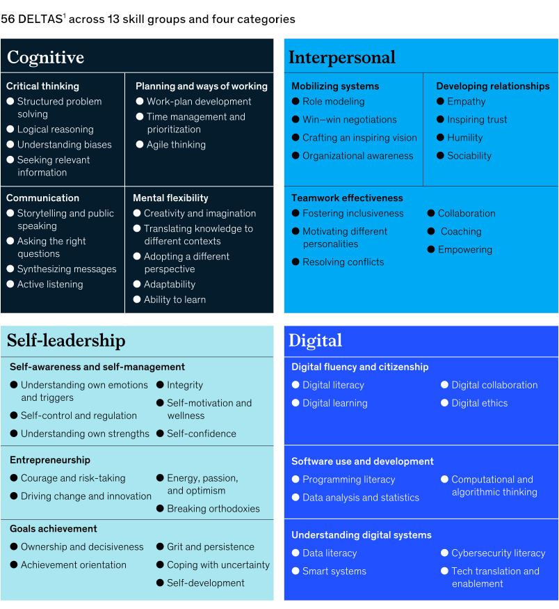
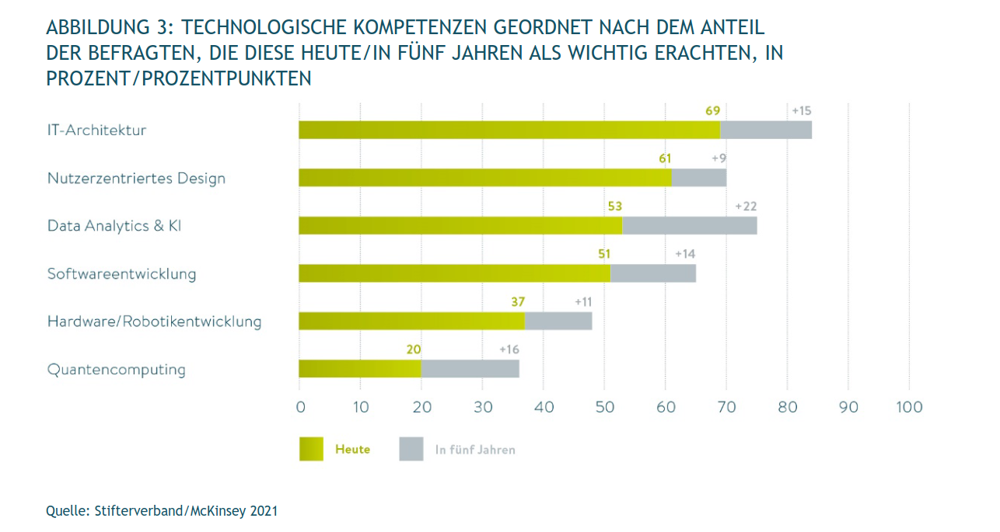
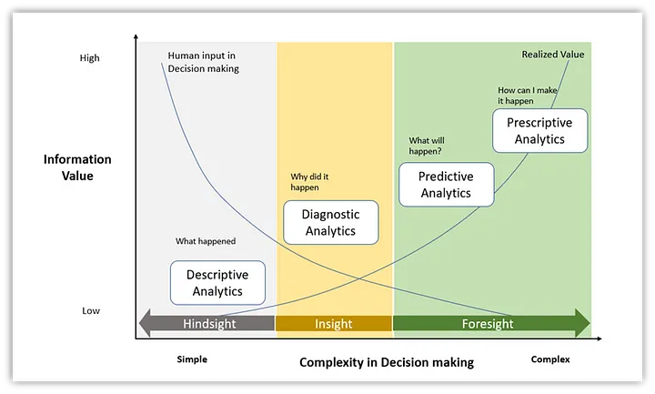
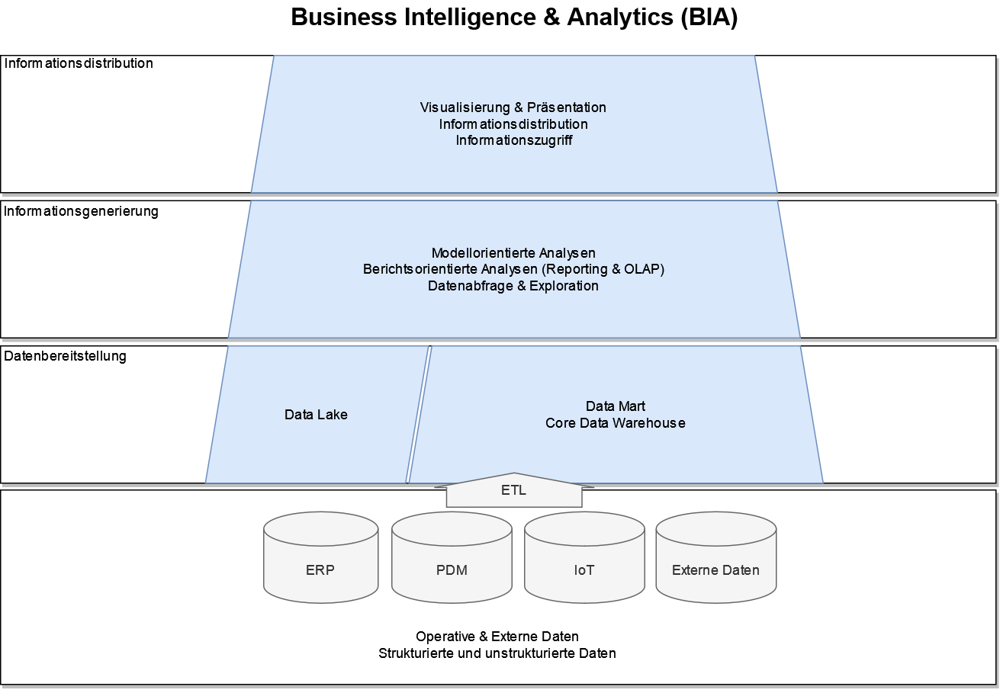

| Block | Gruppe C | Thema |
|---|---|---|
| 1 | 13.03.2024:13:00 – 14:30 | Organisation, Einleitung |
| 2 | 13.03.2024:14:45 – 16:15 | Datenbereitstellung: Data Warehousing |
| 3 | 22.03.2024:09:00 – 10:30 | Datentransformation |
| 4 | 22.03.2024:10:45 – 12:15 | Big Data und Data Lake |
| 5 | 28.03.2024:09:00 – 10:30 | Informationsgenerierung: Berichtsorientierte Analysen |
| 6 | 28.03.2024:10:45 – 12:15 | Advanced und Predictive Analytics: Grundlagen |
| 7 | 16.04.2024:13:00 – 14:30 | Advanced und Predictive Analytics: Klassifikation |
| 8 | 16.04.2024:14:45 – 16:15 | Advanced und Predictive Analytics: Klassifikation |
| 9 | 30.04.2024:13:00 – 14:30 | Informationsbereitstellung: Visualisierungstechniken |
| 10 | 30.04.2024:14:45 – 16:15 | Wild Card: Wunschthema oder Restinhalte und Q\&A |
| - | 13.05.2024:13:00 – 14:30 | Klausur (60 Minuten) |
Business Intelligence & Data Science
Vorlesung 1
Der Plan für heute…
Vorlesung 1
- Vorstellung & kurzes Kennenlern-Quiz
- Organisatorisches
- Einleitung:
- Was sind Business Intelligence & Data Science?
- Was sind operative und dispositive Daten?
- Wie werden aus operativen Daten entscheidungsrelevante Informationen?
Vorstellung
Kennenlern-Quiz
- Das Kennenlern-Quiz umfasst Fragen zu Vorkenntnissen rund um BI-Software und R, um ein Gefühl für den Wissensstand zu bekommen.
- Außerdem gibt es wichtige Fachfragen rund um BI und Data Science.
- Die Gewinnerin/Der Gewinner erhält einen großartigen Preis
- Als Plattform dient Quizziz.com, es ist keine Registrierung notwendig, Verwendung über Smartphone und Laptop möglich
- Künftig starten wir einen Doppelblock mit einem Quiz zum vorangeganenen Block mit einem kleinen Preis für den Tagessieg
Motivation
Warum BI und Data Science?
Entscheidende Skills für die berufliche Zukunft

Warum BI und Data Science?
Technologische Kompetenzen

Organisation
Kursaufbau
Zeitplan Gruppe C
Kursaufbau
Zeitplan Gruppe D
| Block | Gruppe D | Thema |
|---|---|---|
| 1 | 21.03.2024:09:00 – 10:30 | Organisation, Einleitung |
| 2 | 21.03.2024:10:45 – 12:15 | Datenbereitstellung: Data Warehousing |
| 3 | 28.03.2024:13:00 – 14:30 | Datentransformation |
| 4 | 28.03.2024:14:45 – 16:15 | Big Data und Data Lake |
| 5 | 02.04.2024:13:00 – 14:30 | Informationsgenerierung: Berichtsorientierte Analysen |
| 6 | 02.04.2024:14:45 – 16:15 | Advanced und Predictive Analytics: Grundlagen |
| 7 | 15.04.2024:13:00 – 14:30 | Advanced und Predictive Analytics: Klassifikation |
| 8 | 15.04.2024:14:45 – 16:15 | Advanced und Predictive Analytics: Klassifikation |
| 9 | 02.05.2024:13:00 – 14:30 | Informationsbereitstellung: Visualisierungstechniken |
| 10 | 02.05.2024:14:45 – 16:15 | Wild Card: Wunschthema oder Restinhalte und Q\&A |
| - | 13.05.2024:13:00 – 14:30 | Klausur (60 Minuten) |
Kursmaterialen
Kurs-Website
Alle Kursinhalte sind auf der Kurs-Website verfügbar:
- Aktuell passwortgeschützt aufgrund Nutzung Copyright-geschützter Materialien, daher nur Nutzung in diesem Personenkreis
- 3 gefundene und gemeldete Typos (E-Mail, StudIP) = 1 Packung Bahlsen-Kekse nach Wahl
- Tipp: Bookmark des Links nach Passworteingabe erübrigt künftige Eingabe des Passworts
Kursmaterialen
Folien
- Folien sind auf der Startseite der Kurs-Website verlinkt
- Darstellung ist für den Browser (Chrome, Safari und Firefox) optimiert, um interaktive Elemente darzustellen
- Im Burger-Menü oben rechts lässt sich zu jeder Zeit auch eine PDF Version zum Ausdruck in Papierform oder für Notizen erstellen:
- Tools -> PDF Export Mode -> Strg + P (Cmd + P) -> Druck als PDF
- Die Folien werden rechtzeitig vor der Vorlesung als PDF auf StudIP hochgeladen
- Interaktive Elemente werden separat verlinkt.
Kursmaterialen
PDF-Skript
- Neben der HTML-Version ist auch ein PDF-Skript verfügbar und kann auf der Startseite heruntergeladen werden
- Die PDF-Version entspricht inhaltlich immer der Website
- Die Darstellung ist für HTML optimiert und kann für Artefakte beim PDF Rendering sorgen, erleichtert aber das Ausdrucken
Kursmaterialien
Ergänzende Literatur
- Alle klausurrelevanten Inhalte lassen sich auf der Kurs-Website finden und nachlesen, zusätzliche Literatur ist nicht notwendig
- Der Aufbau des Kurses richtet sich nach dem Lehrbuch Business Intelligence & Analytics - Grundlagen und praktische Anwendungen, 4. Auflage von Henning Baars und Hans-Georg Kemper
- Das Buch ist über die Bibliothek der Leibniz FH als E-Book verfügbar
- Block 1 - 5 entstammen größtenteils in Baars und Kemper (2021)
- Methodische Aspekte rund um Predictive Analytics entstammen größtenteils dem frei verfügbaren Introduction to Statistical Learning, 2. Auflage von Gareth James, Daniela Witten, Trevor Hastie und Robert Tibshirani
- Die Quellen zu jeder Vorlesung sind jeweils auf der letzten Folien angegeben.
Einleitung
Business Intelligence
Begriffsabgrenzung
Definition
Business Intelligence (BI) ist eine Reihe von Architekturen und Technologien, die Rohdaten in sinnvolle und nutzbare, entscheidungsrelevante Informationen umwandeln. Es ermöglicht Anwendenden, informierte Entscheidungen auf der Grundlage von Daten zu treffen, die ein Unternehmen gegenüber seinen Wettbewerbern in Vorteil bringen können (siehe Forrester.com).
- Abgeleitet vom Intelligence-Begriff in der militärischen Informationsverarbeitung Großbritanniens im 2. Weltkrieg:
- Die richtigen Informationen zur richtigen Zeit an die richtigen Personen.
- Frühe kommerzielle Ansätze in den 60er Jahren im Zuge der Entwicklung relationaler Datenbanken.
Business Intelligence
Begriffsabgrenzung
- Zunächst Fokus auf Management Support Systeme (MSS) und daher eher auf oberste Ebenen zugeschnitten
- Der Begriff Business Intelligence (BI) wurde in den 1990ern geprägt
- Heute wird BI laut Gartner Group charakterisiert durch:
- Breite Verfügbarkeit von BI Tools auf allen Ebenen des Unternehmens
- Geschäftsentscheidung auf Basis aktueller Informationen und Daten und nicht auf Intuition
- Umfangreiche Analyse- und Reportingmöglichkeiten mit Self-Service Tools für Fachbereiche
Business Intelligence
Betriebliche Dimensionen

Data Science
Begriffsabgrenzung
Definition
Data Science beschäftigt sich mit einer zweckorientierten Datenanalyse und der systematischen Generierung von Entscheidungshilfen und -grundlagen, um Wettbewerbsvorteile erzielen zu können. Der Schwerpunkt liegt dabei nicht auf den Daten selbst, sondern auf der Art und weise, wie diese verarbeitet und analysiert werden (siehe Gesellschaft für Informatik 2019).
- Data Science ist ein vergleichsweise neues wissenschaftliches Feld, eine Kombination aus Statistik und Informatik, insbesondere Software Engineering
- Da es sich um ein junges Feld handelt sind Definitionen und die damit verbundenen Rollen im stetigen Wandel
Data Science
Schwerpunkte
- Aufgrund der potentiellen Breite des Felds erfolgt oft eine genauere Aufteilung in vier Kernbereiche:
- Data Engineering: Methoden und Prozesse für die Speicherung, Haltung und Replikation von Daten
- Data Analytics: Datenanalyse mit statistischen Methoden
- Predictive Modelling: Die Verwendung von statistischen Methoden zur Vorhersage
- Machine Learning: Algorithmen, die aus Daten lernen, Muster erkennen und hierauf aufbauend neue Situationen oder zukünftige Entwicklungen vorhersagen
Data Science
Reifegrade von Data Analytics

Data Science
Data Science, Data Analytics, Data Mining?
- Die Unterscheidung zwischen den Begriffen Data Analytics, Data Mining und Data Science ist nicht immer trennscharf
- Data Mining ist meist definiert als der Prozess der Informationsextraktion aus Daten und ist ebenso wie Data Analytics eine Teilmenge von Data Science
- In dieser Vorlesung dient Data Science als methodischer Baukasten, um den BI-Prozess mit modellgestützten Methoden anzureichern und Zusammenhänge sichtbar zu machen
- Hierbei steht der Zweck der Modelle, nämlich die Entscheidungsunterstützung, im Vordergrund
Business Intelligence und Data Science
Zusammenführung der Begriffe und inhaltlicher Aufbau der Vorlesung

Dispositive und operative Daten
Operative versus dispositive Aufgaben
- Anders als die anfänglichen MSS unterstützen moderne BI-Systeme sowohl operative, als auch dispositive Aufgaben
- Dispositive Aufgaben sind Leitungs- und Lenkungstätigkeiten im betrieblichen Ablauf
- Operative Aufgaben umfassen die Leistungserstellung oder -verwertung
- An beide Aufgabenfelder gelten unterschiedliche Anforderungen, die in Daten und Systemen abgebildet werden müssen
Dispositive und operative Daten
Operative versus dispositive Daten
Dispositive Daten
- Unterstützen Leitungs- und Lenkungstätigkeiten im betrieblichen Ablauf
- Häufig verdichtet, transformiert und themenbezogen aufbereitet und mit Historie angereichert
Operative Daten
- Dienen der Abwicklung von Geschäftsprozessen und werden im Rahmen von Transaktionen1 erzeugt
- Sehr granular und mit hoher Änderungsrate
- Beispiele sind Bestellungen, Aufträge und Lagerbestände oder Stammdaten
Dispositive und operative Daten
Operative versus dispositive Daten
| Operative Daten | Entscheidungsorientierte Daten | |
|---|---|---|
| Ziel | Abwicklung der Geschäftsprozesse | Informationen für Entscheidungen |
| Ausrichtung | Detailliert und granular | Meist verdichtet und transformiert mit Metadaten |
| Zeitbezug | Aktualität steht im Vordergrund, Zeitpunkt der Transaktion, keine Historisierung | Aktualität variiert mit der Aufgabe, Historienbetrachtung ist möglich |
| Modellierung | Keine Altbestände | Sachgebiets- und themenbezogen orientiert und anwendungstauglich |
| Zustand | Häufig redundant und inkonsistent zwischen Systemen | Konsistent modelliert, Redundanz bewusst |
| Update | Laufend, Real-time | Ergänzend als Fortschreibung |
| Queries | Strukturiert, standardisiert und meistens statisch | Ad-hoc und dynamisch für wechselnde Fragestellungen sowie Standardberichte |
Dispositive und operative Daten
Überführung von Daten in Information
- Hauptziel dieser Vorlesung ist die Überführung von operationalen Daten in entscheidungsrelevante Informationen
- Dies hat zwei Hauptaspekte:
- Block 1-4: Technische Infrastruktur und Architektur
- Block 5-9: Methodische Konzepte wie modellorientierte Analysen
| Block | Thema |
|---|---|
| 1 | Organisation, Einleitung |
| 2 | Datenbereitstellung: Data Warehousing |
| 3 | Datentransformation |
| 4 | Big Data und Data Lake |
| 5 | Informationsgenerierung: Berichtsorientierte Analysen |
| 6 | Advanced und Predictive Analytics: Grundlagen |
| 7 | Advanced und Predictive Analytics: Klassifikation |
| 8 | Advanced und Predictive Analytics: Klassifikation |
| 9 | Informationsbereitstellung: Visualisierungstechniken |
Quellen
Business Intelligence & Data Science, SoSe 2024
Baars, Henning, und Hans-Georg Kemper. 2021. Business Intelligence & Analytics: Grundlagen und praktische Anwendungen: Ansätze der IT-basierten Entscheidungsunterstützung. 4., überarbeitete und erweiterte Auflage. Lehrbuch. Wiesbaden [Heidelberg]: Springer Vieweg.
Gesellschaft für Informatik. 2019. „Data Science: Lern- und Ausbildungsinhalte“. Gesellschaft für Informatik.
Schieder, Christian. 2016. „Historische Fragmente einer Integrationsdisziplin – Beitrag zur Konstruktgeschichte der Business Intelligence“. In Analytische Informationssysteme, herausgegeben von Peter Gluchowski und Peter Chamoni, 13–32. Berlin, Heidelberg: Springer Berlin Heidelberg. https://doi.org/10.1007/978-3-662-47763-2_2.
Sharma, Vinod, Jeanne Poulose, und Chandan Maheshkar. 2023. „Analytics Enabled Decision Making ‚Tracing the Journey from Data to Decisions‘“. In Analytics Enabled Decision Making, herausgegeben von Vinod Sharma, Chandan Maheshkar, und Jeanne Poulose, 1–22. Singapore: Springer Nature Singapore. https://doi.org/10.1007/978-981-19-9658-0_1.
Winter, Robert. 2016. „Analytische Informationssysteme aus Managementsicht: lokale Entscheidungsunterstützung vs. unternehmensweite Informations-Infrastruktur“. In Analytische Informationssysteme, herausgegeben von Peter Gluchowski und Peter Chamoni, 67–95. Berlin, Heidelberg: Springer Berlin Heidelberg. https://doi.org/10.1007/978-3-662-47763-2_5.